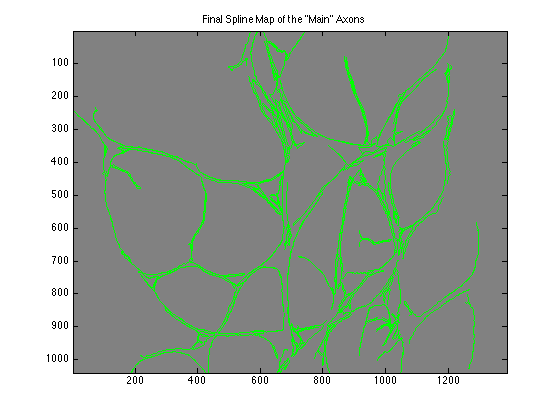

Homework 7 - Splines
Ashutosh Priyadarshy
Digital Image Processing
Spring 2012
Input image: 'no+degeneration.jpg'
% Clear and close. clear all; close all % Read in the original image. img = imread('no+degeneration.jpg'); % Use the green channel only. img = img(:,:,2); % Use a Laplacian of Gaussian Edge detector...let Matlab choose the % threshold automatically. edgemap = edge(img, 'log'); % Show the edge map. imagesc(edgemap); colormap gray; title('Original Edge Map - Laplacian of a Gaussian'); % Perform a connected component analysis and remove too small contours. cc = bwconncomp(edgemap); stats = regionprops(cc, 'Perimeter'); idx = find([stats.Perimeter] > 400); pruned = ismember(labelmatrix(cc), idx); % Create a label matrix so we can process the contours and fit splines. labels = bwlabel(pruned); num_labels = max(max(labels)); % Display the part of the edge map we are dealing with. figure; imagesc(pruned); colormap gray; title('Pruned Edge Map - These are the "Main" Axons'); % Display a blank image to show the spline edge map. figure; imagesc(0*pruned); colormap gray; title('Final Spline Map of the "Main" Axons'); % Go through every contour. for current_label_name = 1:num_labels % Get the row, col values of the current label (contour). currentLabelOnly = labels == current_label_name; [I, J] = find(currentLabelOnly); % Find the contours in order that they would be traversed starting in the upper right corner. B = bwtraceboundary(currentLabelOnly, [I(1), J(1)], 'W', 8); boundaries = B; I = boundaries(:, 1); J = boundaries(:, 2); % The paratemerized curves' length. t = 1:length(I); % Fit a spline to these points using every N/200 points as a ctrl pt. xs = spline(t, J, 1:round(length(t)/200):max(t)); ys = spline(t, I, 1:round(length(t)/200):max(t)); % Display the spline edge map. hold on; plot(xs, ys, 'g'); end